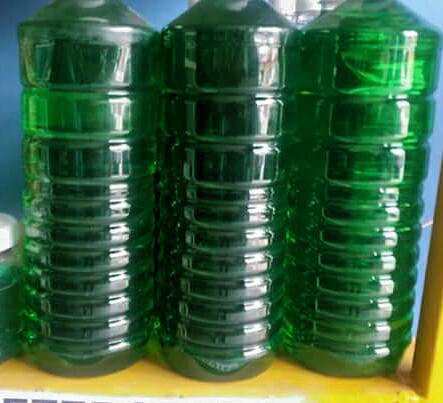

JABÓN LÍQUIDO PARA TRASTES

Los detergentes líquidos que usamos para lavar los trastes, no sólo son efectivos para limpiar los vasos y la vajilla, sino que tienen muchos otros beneficios que puedes aprovechar, como en tu ropa y lentes.
¿Quieres conocer sus múltiples beneficios?
- Manchas de grasa en la ropa
- Si tu blusa favorita se manchó con grasa de comida, ¡no la tires! Mejor colócale un poco de jabón para trastes y déjalo actuar durante toda la noche. Después enjuágala y lávala como acostumbras.
- Manchas de pintura en la piel
- Si tienes pensado pintar tu casa y no quieres mancharte las manos, coloca un poco de lavatrastes en tus manos como si fuera crema humectante. Con esto las manchas de pintura se irán sin problemas cuando te laves.
- Evita que los lentes se empañen
- Si en esta temporada de lluvia tus lentes se empañan mucho, puedes colocar una gotita de jabón en cada lente, frotar con un pañuelo y dejar secar. Esto evitará que se empañen por el vapor.
- Limpia alfombras
- Si en casa tienes una alfombra, pero no tienes un detergente especial para limpiarlas, no te preocupes. Sólo basta con disolver una cucharada de detergente para trastes en dos tazas de agua caliente. Después moja un trapo con la mezcla y pásalo sobre la mancha. Ahora enjuaga con una esponja de agua fría y seca con un trapo limpio.
¿Lista para aprovechar tu detergente para trastes?